CLAUDE’S PICK
Paca — AI 에이전트와 인간이 동등하게 협력하는 오픈소스 프로젝트 관리 플랫폼
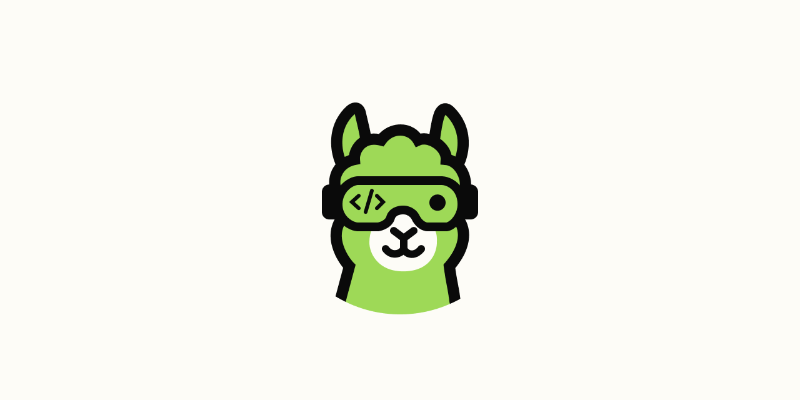
Jira, Trello, ClickUp 등 기존 프로젝트 관리 도구에서는 AI가 부수적인 챗봇으로만 통합되어 스크럼 프로세스에 진정으로 참여하지 못하는 문제가 있다. Paca는 AI 에이전트를 스크럼팀의 동등한 팀원으로 위치시키는 오픈소스 자체호스팅 플랫폼으로, 인간과 AI가 동일한 보드와 스프린트에서 협력하며 작업을 선택하고 BDD 사양을 작성하며 실시간으로 적응한다. 완전히 무료이며 플러그인과 설정을 통해 커스터마이징 가능하다.
핵심 포인트: 핵심 기여: AI 에이전트를 스크럼 보드의 일급 팀원으로 통합하고, 자체호스팅 방식으로 데이터 소유권을 보장하며, Jira 등 상용 도구 대비 완전 무료 오픈소스(Apache 2.0)로 제공하면서 플러그인 기반 완전 커스터마이징을 지원한다.
GitHub
Cabinet — AI 팀을 위한 로컬 우선 지식 베이스 OS
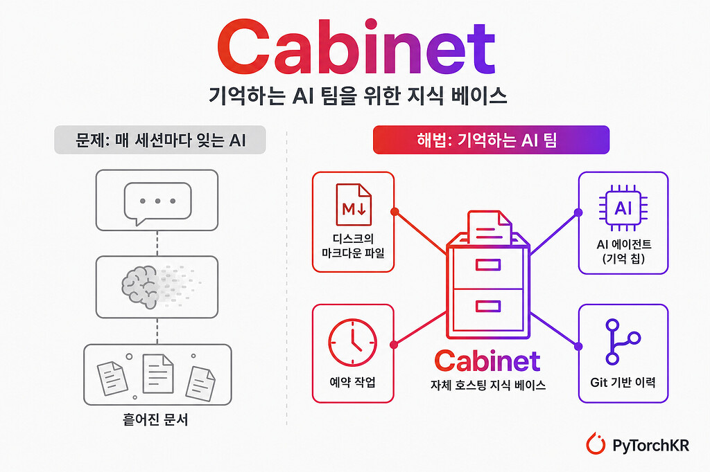
AI 세션마다 이전 맥락이 사라지고 흩어진 문서로 인해 팀의 효율성이 저하되는 문제를 해결하기 위해 개발된 AI 우선 지식 베이스. 모든 데이터를 로컬 마크다운 파일로 저장하고 Git으로 자동 커밋하며, 기억을 유지하는 AI 에이전트와 예약 작업이 하나의 플랫폼에서 협력하도록 설계되었다. 데이터 소유권 보장, 공급자 종속성 제거, 변경 이력 관리를 핵심 원칙으로 한다.
핵심 포인트: 핵심 기여: AI 에이전트, Git 기반 버전 관리, 크론 기반 예약 작업, 스킬 시스템을 통합하여 지식 관리와 자동화를 단일 플랫폼에서 구현했으며, npx 한 줄로 설치 가능한 경량 아키텍처 제공
🔗 discuss.pytorch.kr/t/cabinet-ai-ai-first…
기타 (Others)
RL-Index: 강화학습으로 검색 인덱싱 추론을 최적화
쿼리와 관련 지식 간의 암시적이고 복잡한 추론이 필요한 경우 검색이 어려운 문제를 해결한다. 기존의 쿼리 시점 추론 방식 대신 RL-Index는 인덱싱 단계에서 추론을 수행하도록 전환하여, LLM이 생성한 근거(rationale)로 문서를 증강하고 Group Relative Policy Optimization을 통해 검색 유사성을 보상 신호로 삼아 인덱싱 결정을 직접 최적화한다.
핵심 포인트: 핵심 성과: BRIGHT 벤치마크에서 검색 및 질의응답 성능을 지속적으로 개선하면서 온라인 추론 지연 시간을 대폭 단축하고, 학습된 근거 증강이 다양한 검색기 및 생성기에 걸쳐 강건한 플러그앤플레이 전략으로 일반화된다.
논문 (Papers)
AI & RESEARCH
Multi-Step Tool-Use RL: 감독 신호로 붕괴 현상 해결
LLM의 도구 사용 작업에서 강화학습만으로는 제어 토큰의 예상치 못한 확률 급증으로 인한 구조적 붕괴 현상이 발생한다. 본 논문은 오프폴리시 감독, 힌트 기반 지도, 오류 예시 감독 등 다양한 감독 신호를 체계적으로 조사하여, 감독 미세조정과 강화학습을 인터리브하면 안정성을 대폭 개선할 수 있음을 보여준다. 이를 통해 복잡한 다단계 도구 사용 작업에서 견고한 LLM 훈련을 실현한다.
핵심 포인트: 핵심 기여: 다단계 도구 사용 강화학습의 붕괴 원인을 제어 토큰의 확률 스파이크로 규명하고, 인터리브 감독 미세조정 기법으로 안정성을 극대화하면서 형식 및 내용 분포 외 평가에서의 성능 저하 문제를 분석했다.
논문 (Papers)
TabFM: 표 데이터용 제로샷 파운데이션 모델
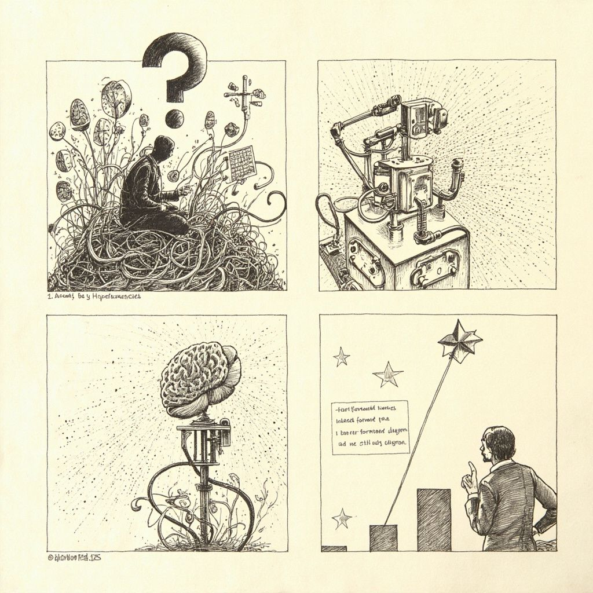
기업 데이터 인프라의 핵심인 표 데이터에 대해 XGBoost 같은 기존 트리 기반 알고리즘의 재학습 없이 즉시 적용 가능한 파운데이션 모델을 필요로 했다. 구글의 TabFM은 하이브리드 어텐션 메커니즘으로 행과 열 사이의 관계를 자동 학습하고, 한 번의 forward pass로 분류 및 회귀 예측을 수행하며, 별도의 피처 엔지니어링이나 튜닝 없이 새로운 표에 즉시 적용된다. 수억 개의 합성 데이터로 사전학습되었으며 BigQuery의 AI.PREDICT 명령으로도 곧 제공될 예정이다.
핵심 포인트: 핵심 기여: 하이브리드 어텐션(행-열 교대 처리 및 인컨텍스트 러닝)으로 큰 표에서도 계산량 급증 없이 즉시 예측 가능하며, 재학습 없이 붙여 쓰는 사전학습 모델로 트리 기반 알고리즘의 오랜 영역에 처음 진입했다.
🔗 threads.com/@myiovemylife/post/DaQIqT6Gkq…
기타 (Others)
AECV-Bench: 건축도면 AI 인식 벤치마크
최신 멀티모달 AI 모델들이 건축·엔지니어링 도면을 얼마나 잘 이해하는지 평가하는 벤치마크. 도면의 제목이나 실명 같은 텍스트 읽기(OCR)는 잘 처리하지만, 도면 기호 해석과 공간 추론에서 성능이 크게 떨어진다. 특히 문과 창문 개수 세기 같은 기호 인식 작업에서 AI가 어려움을 겪으며, 연구진은 범용 모델만 사용하기보다 도메인 전문성과 인간의 검수를 결합한 워크플로우를 권장한다.
핵심 포인트: 핵심 기여: 120개 고품질 평면도의 객체 개수 세기와 192개 질의응답 쌍으로 구성된 벤치마크를 통해 현재 AI 모델의 도면 이해 능력 한계를 명확히 드러냄. 도면 AI의 실무 최적화 방향이 최고 성능 모델 선택에서 효과적인 인간 검수 배치 지점 결정으로 전환되어야 함을 제시.
논문 (Papers)
IFStruct — 구조화된 출력 준수를 측정하는 실전용 벤치마크
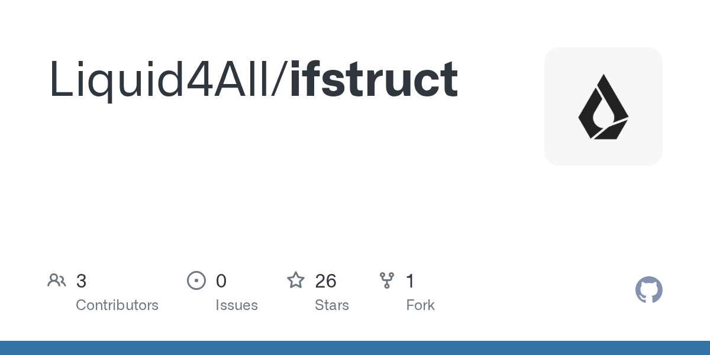
언어모델이 복잡한 스키마에서 유효한 JSON이나 YAML을 생성하지 못하는 문제를 해결하기 위해 Liquid AI가 공개한 벤치마크. 실제 프롬프트의 제약 조건을 반영한 구조화된 출력 작업을 평가하며, 모델 크기보다는 목적에 맞는 데이터와 학습 방법론의 중요성을 입증한다. 350M 파라미터 소형 모델도 전용 강화학습으로 높은 성능을 달성할 수 있음을 보여준다.
핵심 포인트: 핵심 기여: IFStruct는 구조화된 출력 준수를 평가하는 최초의 전문 벤치마크로, 프론티어 모델은 거의 완벽한 JSON/YAML 생성을 달성하면서도 소형 모델의 구체적인 실패 사례를 정량화하여 향후 미세한 데이터와 훈련 방법론 개선의 방향을 제시한다.
🔗 github.com/Liquid4All/ifstruct
GitHub
STORM — Stanford 딥 리서치를 Claude로 구현한 다중 관점 검증 시스템
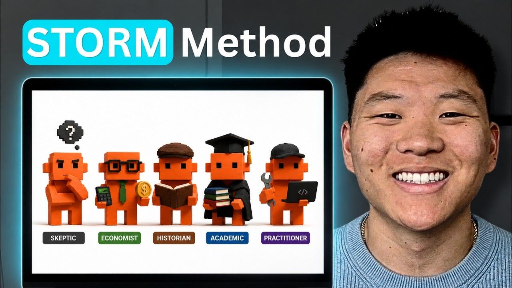
단일 프롬프트로는 자신의 맹점을 파악할 수 없다는 문제를 해결하기 위해, 실무자, 학자, 회의론자, 경제학자, 역사가 등 5가지 서로 다른 관점을 동시에 활성화하여 상호 검증하는 구조를 제시한다. Claude를 활용한 이 STORM 방법론은 충돌 매핑, 종합, 동료 검증의 4단계를 자동으로 실행하며, 6개의 에이전트를 투입해 인용과 수치를 원본 자료와 대조하여 검증 결과를 marked로 반환한다.
핵심 포인트: 핵심 성과: Claude Code의 Deep Research 100개 에이전트 대비 12개 에이전트 기반 STORM이 근거 품질, 소스 다양성, 실행 가능성 6개 항목 모두에서 우수한 결과 달성, 에이전트 수 대비 구조적 반박 설계가 더 효율적이고 저렴한 답변 생성.
🔗 youtube.com/watch?v=Tj3018n5MVg
기타 (Others)
Memora — 장기 에이전트 작업용 이층 메모리 시스템
AI 에이전트가 장기 프로젝트에서 과거 대화와 결정 과정을 안정적으로 유지하지 못하는 문제를 해결한다. 전체 대화 저장은 토큰 비용을 증가시키고, RAG 검색은 맥락을 분산시키며, 요약은 날짜와 제약사항 같은 디테일을 손실시킨다. Memora는 기억을 두 층으로 분리하여 6~8단어의 경량 추상화로 검색하면서 실제 내용은 풍부하게 보존하고, 여러 경로의 접근을 위해 단서 앵커를 붙인다. 같은 원본 기억으로 다양한 질문에 대응할 수 있다.
핵심 포인트: 핵심 성과: LoCoMo 벤치마크 86.3%, LongMemEval 87.4% LLM 판정자 정확도를 기록했으며, 기존 RAG·Mem0·Zep·LangMem 및 전체 컨텍스트 추론을 능가하고 토큰 사용량을 최대 98% 감축했다.
🔗 microsoft.com/en-us/research/blog/memora…
기타 (Others)
Devin Fusion — 프런티어 모델 성능 유지하며 비용 35% 절감
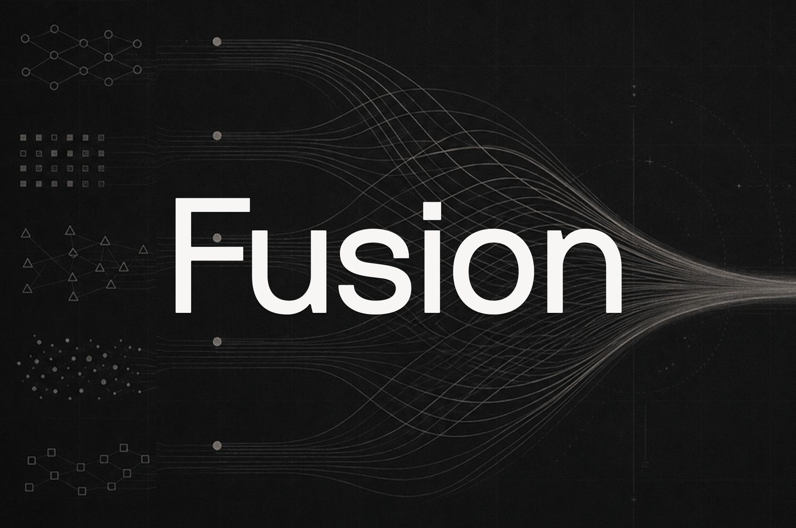
기존 다중 모델 라우팅 방식은 벤치마크에는 우수하지만 실제 코드 병합 품질이 떨어지는 문제가 있다. Cognition의 Devin Fusion은 소형 모델이 병렬 작업을 처리하고 프런티어 모델이 계획과 검증을 담당하는 하이브리드 구조로 이를 해결한다. 작업 난이도에 따라 동적으로 모델을 전환하면서 Fable 수준의 성능을 유지하면서도 비용을 35% 감축했다.
핵심 포인트: 핵심 성과: FrontierCode 벤치마크에서 프런티어 모델 수준의 성능을 유지하면서 비용을 35% 절감하여 실제 병합 가능한 코드 품질과 경제성을 동시에 달성했다.
🔗 cognition.com/blog/devin-fusion
기타 (Others)
BINEVAL: 이진 질문 기반 투명한 LLM 평가 프레임워크
LLM 판정자의 평가 점수가 불투명해 디버깅이 어려운 문제를 해결하는 프레임워크. BINEVAL은 복잡한 평가 기준을 원자적 이진 질문들로 분해하고 각 질문에 대한 답변을 독립적으로 수집한 후 집계하여 다차원의 해석 가능한 점수를 생성한다. 추가 학습 없이도 G-Eval 같은 기존 모델들을 능가하는 성능을 제공하며, 질문 수준의 피드백으로 프롬프트 개선을 즉시 실행할 수 있다.
핵심 포인트: 핵심 기여: 평가 기준을 이진 질문으로 원자적 분해하여 완전한 투명성 확보, 기존 LLM-as-a-Judge 방식의 불투명한 점수 문제 해결 및 즉시 디버깅 가능
논문 (Papers)
OpenAI: GPT-5.6 시리즈 공개, 정부 승인 기업 한정 공개
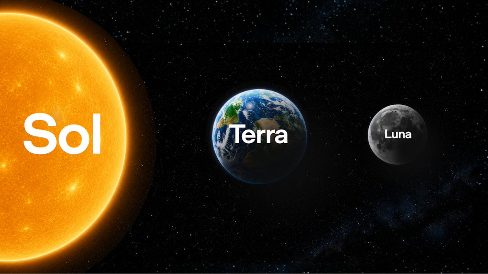
OpenAI가 역대 최강 모델 GPT-5.6 세대를 공개했으나 미국 정부의 승인을 받은 20여 개 기업에만 먼저 제공하고 있다. Sol, Terra, Luna 세 가지 모델로 구성되며, Sol Ultra는 최고 성능을 위해 최장 사고 모드와 멀티 에이전트 모드를 지원한다. 이는 지난 Anthropic의 Fable, Mythos 모델과 유사하게 정부가 고객사를 개별 승인하는 방식이며, 일반 공개는 수주 뒤 예정이다.
핵심 포인트: 핵심 성과: OpenAI가 역대 최강 모델 Sol, 중급형 Terra, 저가형 Luna 등 3가지 신규 모델을 공개했으며, 정부 승인 기업 한정 공개 후 수주 뒤 일반 공개 예정. 조직 차원으로 트럼프 행정부의 국가 AI 정책을 주도한 딘 볼을 전략 신설팀 수장으로 영입해 정책·규제 대응을 회사 전략에 통합.
🔗 threads.com/@choi.openai/post/DaEYYrYj6BD…
기타 (Others)
Agent-Native Memory System — LLM 에이전트 메모리의 체계적 평가
LLM 에이전트의 메모리 시스템이 단순 검색을 넘어 복잡한 데이터 관리 체계로 진화했으나, 기존 평가는 F1, BLEU 같은 구식 지표로 종단 성능만 측정하고 있다. 이 논문은 에이전트 메모리를 4개의 핵심 모듈로 분해하여 운영 비용, 아키텍처 트레이드오프, 동적 지식 업데이트에 따른 견고성 등 시스템 수준의 문제를 체계적으로 분석한다. 블랙박스에 가려져 있던 메모리 시스템의 실제 제약과 성능 특성을 규명하여 실용적인 에이전트 메모리 설계를 위한 기초를 제공한다.
핵심 포인트: 핵심 기여: 메모리 아키텍처의 4개 모듈 분해를 통해 기존 평가에서 간과된 운영 비용과 시스템적 한계를 정량적으로 규명하고, 에이전트 메모리의 실제 작동 특성에 기반한 설계 원칙 제시.
논문 (Papers)
DEVTOOLS & OPEN SOURCE
Drawing List — 모듈러 건축 설계 생산성 60% 향상
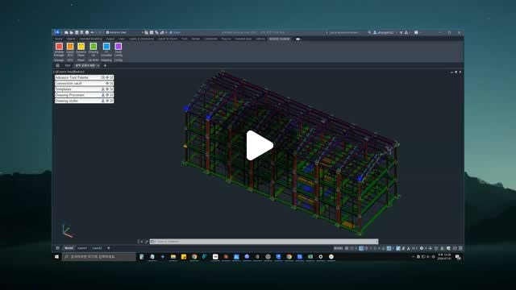
Autodesk Advance Steel에서 모듈러 건축 설계 시 모든 객체가 BOM에 출력되는 문제로 인해 모듈별 파일 분할, 수정, 통합의 반복 작업이 발생하고 있다. Drawing List 애드인은 선택한 객체만 지정된 양식으로 BOM을 생성해 클립보드에 저장하고, 단일 원본 파일에서 모든 제작도면을 작성할 수 있도록 프로세스를 개선하여 제작도 생산성을 60% 이상 향상시켰다.
핵심 포인트: 핵심 성과: Drawing List 애드인 도입으로 모듈러 건축 제작도 생산성을 60% 이상 향상시켰으며, 단일 원본 파일 기반 워크플로우로 반복적인 파일 관리 작업을 완전히 제거했다.
🔗 threads.com/@logotekton/post/DaPwLYtCtKp?…
기타 (Others)
kANNolo — Rust 기반 초고성능 벡터 검색 엔진
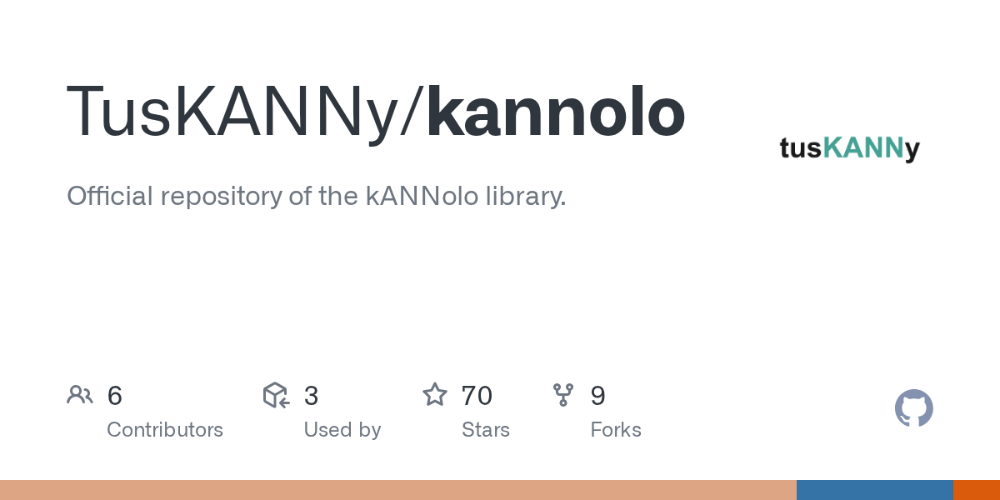
FAISS가 지배하는 벡터 검색 시장에서 극도로 모듈화된 새로운 엔진이 등장했다. Rust 기반의 kANNolo는 단 4개의 추상화 구조로 FAISS의 속도를 능가하며, 400줄 코드만으로 복잡한 IVF 엔진을 구축할 수 있을 정도로 직관적이다. 깔끔한 아키텍처로 AI 에이전트와 함께 새로운 벡터 인덱스를 빠르게 프로토타이핑하기에 최적화된 오픈소스다.
핵심 포인트: 핵심 성과: FAISS보다 빠른 속도를 단 4개의 추상화 구조로 구현했으며, 400줄 코드로 IVF 엔진을 조립할 수 있는 모듈화 설계를 실현. HNSW 그래프 인덱스와 Product Quantization을 지원하며 Dense/Sparse 임베딩을 모두 처리 가능.
GitHub
CadQuery: 파라메트릭 3D 모델링을 코드로 구현
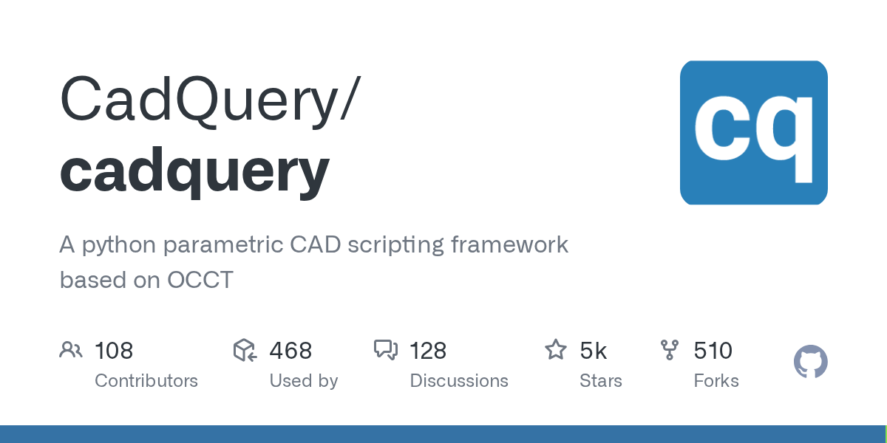
반복적인 표준 부재 설계 작업으로 인한 생산성 저하 문제를 해결하는 Python 기반 파라메트릭 CAD 스크립팅 도구. 마우스 기반 CAD 작업을 코드로 전환하여 함수 호출과 변수 정의만으로 STEP, DXF, IFC 포맷의 3D 모델을 자동 생성한다. 설계 데이터가 코드로 관리되어 git을 통한 버전 관리와 변경 이력 추적이 가능하며, CSV 파라미터 표와 함수 하나로 규격이 다른 수백 개의 표준 부재를 일괄 생성할 수 있다.
핵심 포인트: 핵심 기여: 설계를 그리는 대상에서 프로그래밍하는 대상으로 전환하여 반복 작업 속도를 획기적으로 단축하고, git 기반 설계 버전 관리 및 차이 비교로 협업 효율성을 극대화.
🔗 github.com/CadQuery/cadquery
GitHub
IfcOpenShell — 라이선스 없이 BIM 데이터를 파이썬으로 분석하는 오픈소스
BIM 데이터 작업에는 상용 Revit이나 ArchiCAD 라이선스가 필수라고 여겨져 왔다. IfcOpenShell은 개방 표준인 IFC 파일을 파이썬으로 직접 다룰 수 있는 오픈소스 라이브러리다. 모델 내 벽, 보, 기둥 등 객체를 코드로 읽고 속성을 변경하며 지오메트리를 추출할 수 있어, 부재 수량 집계나 설계 변경 비교, 파일 형식 변환 같은 반복 작업을 스크립트 한 번으로 자동화한다.
핵심 포인트: 핵심 기여: IFC2x3, IFC4 등 다양한 BIM 표준을 지원하며 C++ 및 파이썬 API로 제공되어 런타임 스키마 확장이 가능하고, Blender 기반 BonsaiBIM의 엔진으로도 활용되어 무료 BIM 저작까지 연결된다.
🔗 github.com/IfcOpenShell/IfcOpenShell
GitHub
ezdxf — Python으로 AutoCAD 라이선스 없이 DXF 도면 자동 생성
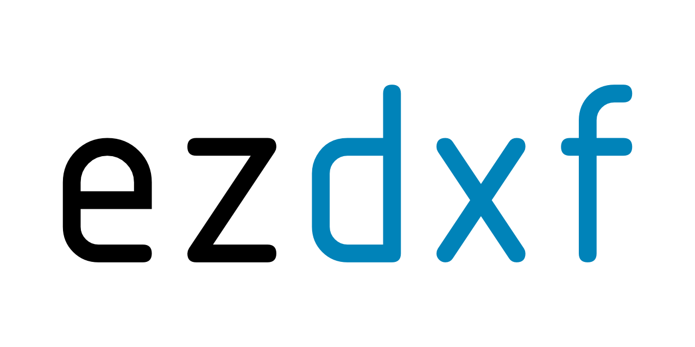
토목 및 건축 분야에서 반복되는 표준 도면 작업을 수동으로 처리하는 비효율성을 해결하는 Python 라이브러리. ezdxf는 AutoCAD R12부터 최신 버전까지 DXF 파일의 읽기, 쓰기, 수정을 지원하며, 치수, 해치, 블록, 레이어 등 실무 도면에 필요한 엔티티를 거의 모두 다룬다. 규격만 변경하여 수백 장의 표준도면을 일괄 생성하거나 Civil 3D 출력물을 자동으로 정리할 수 있어 반복 작업의 자동화 여지가 크다.
핵심 포인트: 핵심 기여: 10년 이상 지속적으로 유지되어온 오스트리아 개발자의 라이브러리로, DXF 버전 R12부터 R2018까지 광범위하게 지원하며 MIT 라이선스 하에서 Python 3.10 이상 환경에서 OS 독립적으로 작동한다.
GitHub
Frontend Slides — AI와 음성으로 HTML 슬라이드를 자동 생성
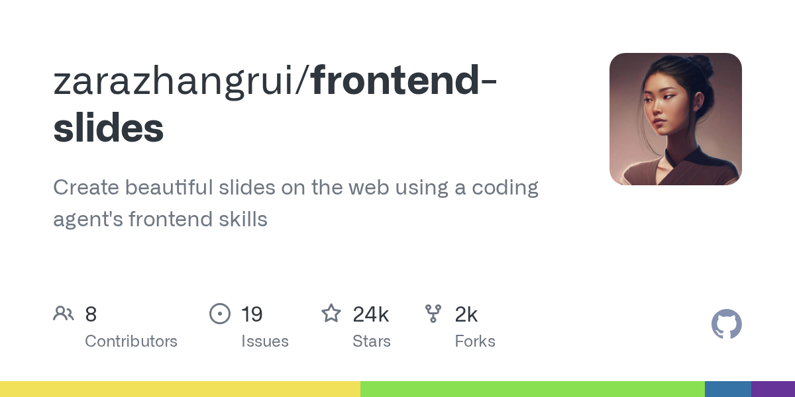
발표 자료 작성 시 레이아웃 조정, 글머리표 편집, 색상 선택 등 디자인 작업이 번거로운 문제를 해결하는 도구. Claude Code 플러그인으로 제공되며, 음성 설명만으로 세 가지 디자인 안을 자동 생성하고 사용자가 선택하는 방식으로 작동한다. 결과물은 독립적인 HTML 파일로 제공되어 추가 소프트웨어 설치 없이 브라우저에서 바로 실행 가능하며, 기존 파워포인트 파일의 변환도 지원한다.
핵심 포인트: 핵심 성과: 코드 작성 없이 AI와의 대화만으로 슬라이드 자동 생성, GitHub에서 2만 개 이상의 스타 획득. 기존 파워포인트 파일 HTML 변환 지원으로 데이터 손실 없이 플랫폼 독립적 사용 가능.
🔗 github.com/zarazhangrui/frontend-slides
GitHub
Loop Engineering — AI가 자체 프롬프트를 작성하고 검증하는 자동화 파이프라인
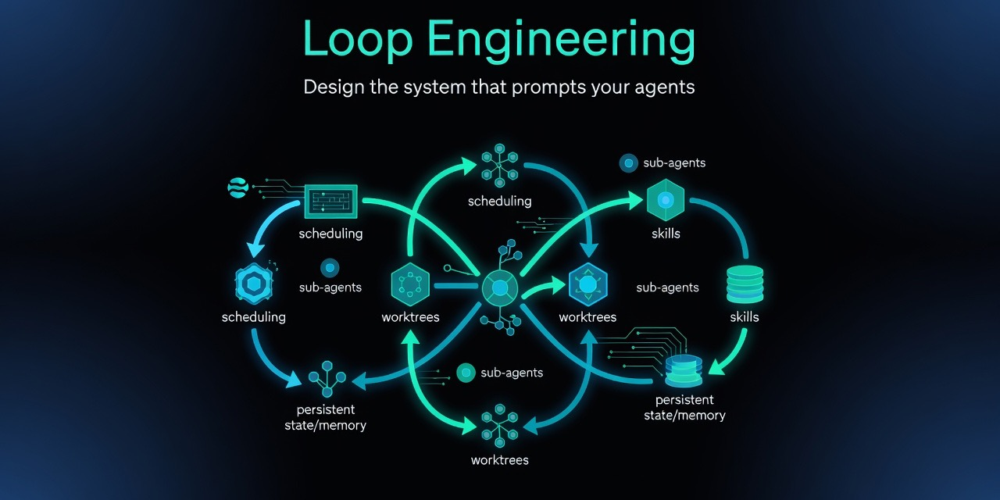
엔지니어가 수동으로 프롬프트를 작성하고 최적화하는 기존 방식의 한계를 해결하기 위해 루프 엔지니어링 패러다임이 등장했다. 이 접근법은 AI 에이전트가 자율적으로 프롬프트를 생성하고 검증을 반복하는 시스템을 설계하여, 프롬프트 엔지니어링의 수작업을 자동화한다. Anthropic의 사례에서 보듯이 향후 경쟁력은 개별 프롬프트 작성 능력이 아닌 에이전트를 목표 달성으로 유도하는 시스템 설계 역량으로 이동하고 있다.
핵심 포인트: 핵심 기여: 루프 엔지니어링은 API 호출 방식을 변경 없이 내부의 협업 레이어로 전환하여 프론티어 모델 이상의 효율성을 달성하며, CLI 도구와 실용적 패턴 제공으로 개발자가 쉽게 자동화 파이프라인을 구축할 수 있도록 지원한다.
🔗 github.com/cobusgreyling/loop-engineering
GitHub
DeepSpec: 추측 디코딩으로 AI 추론 속도 85% 단축
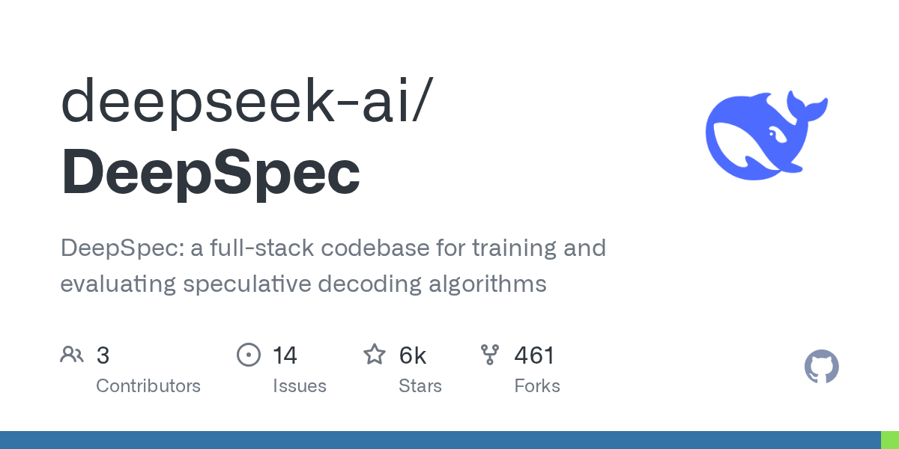
AI 추론 비용이 증가하면서 동일한 성능을 더 낮은 비용으로 달성하는 기술의 필요성이 대두되고 있다. DeepSeek가 공개한 DSpark 모듈과 DeepSpec 코드는 기존 모델의 처리 속도를 최대 85% 향상시키는 추측 디코딩 기술이다. 빠른 초안 모델이 다음 토큰을 예측하고 큰 모델이 이를 한 번에 검증하는 방식으로, 기존 방식의 정확성과 속도의 트레이드오프를 해결하며 하드웨어 비용 절감을 실현한다.
핵심 포인트: 핵심 성과: 동일한 GPU와 모델에서 사용자 체감 생성 속도 57~85% 향상, 기존 MTP-1 대비 추론 원가 대폭 감소, Gemma·Qwen 등 타사 모델에도 적용 가능한 오픈소스 공개.
🔗 github.com/deepseek-ai/DeepSpec
GitHub
SkillSpector — AI 에이전트 스킬의 악성 코드·권한 위험 자동 검사
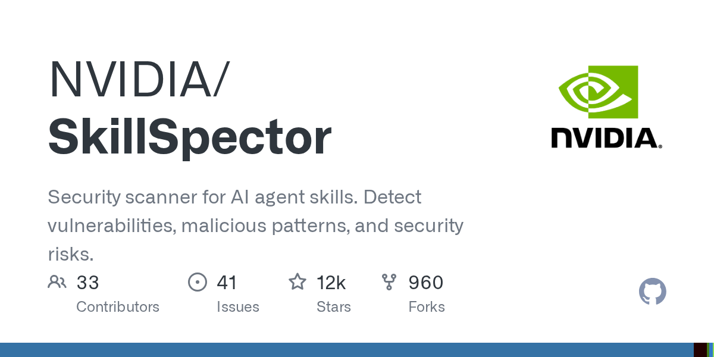
Claude Code, Codex 같은 AI 비서에 설치되는 에이전트 스킬 중 26.1%가 취약점을 포함하고 5.2%는 악의적 의도를 보이는 문제가 있다. NVIDIA의 SkillSpector는 Git 레포지토리, URL, ZIP 파일 등 다양한 형식의 스킬을 스캔하여 프롬프트 주입, 데이터 유출, 권한 상승, 공급망 공격 등 68가지 취약점 패턴을 감지한다. Apache 2.0 라이선스의 오픈소스 도구로 무료로 이용할 수 있으며, Pi 도구로 에이전트 세션 내에서 직접 스킬 검사도 가능하다.
핵심 포인트: 핵심 성과: 68개 취약점 패턴을 17개 카테고리로 분류하여 검사하며, Git 주소 입력만으로 즉시 스캔 가능한 무료 오픈소스 보안 도구 제공. 에이전트 스킬의 26.1% 취약점 발견율에 대응하는 실질적인 보안 검증 솔루션 구현.
🔗 github.com/NVIDIA/SkillSpector
GitHub
Llama.cpp — 로컬 AI 에이전트를 위한 경량 최적화 워크플로우
클라우드 종속성과 높은 구독료로 인한 AI 에이전트 배포의 비효율성을 해결하기 위해 허깅페이스에서 Llama.cpp 최적화 및 양자화 기술을 기반으로 Pi, OpenClaw 같은 코딩 에이전트와 연동하는 워크플로우를 제시했다. 이 구조를 통해 사용자는 개인 로컬 환경에서 강력한 AI 에이전트를 경량으로 실행할 수 있으며, 기존 클라우드 기반 솔루션 대비 훨씬 더 가볍고 직관적인 구현이 가능하다.
핵심 포인트: 핵심 기여: Llama.cpp 양자화 기술을 활용하여 클라우드 의존도를 제거하고 로컬 AI 에이전트 배포의 경제성과 성능 효율성을 동시에 달성. 복잡한 클라우드 인프라 없이도 개인 환경에서 프로덕션급 AI 에이전트 운영 가능.
🔗 m.youtube.com/watch?v=wRcByxXkJCQ
기타 (Others)
ENGINEERING
VisualClaw: 온디바이스 필터링으로 실시간 비디오 AI 비용 98% 절감
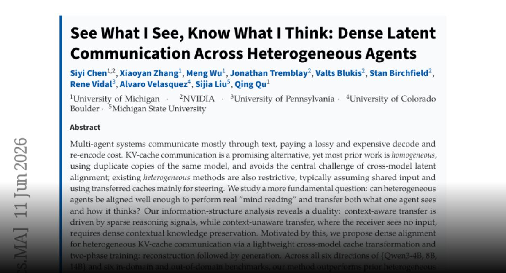
실시간 비디오 AI 시스템에서 장면 변화가 없는 프레임까지 클라우드로 전송하며 발생하는 막대한 API 비용 문제를 해결하는 온디바이스 필터링 기술. VisualClaw는 기기 CPU 단에서 실제 장면 변화가 있을 때만 프레임을 선별하여 API 비용을 98% 이상 절감하고, 노이즈 데이터 감소로 AI 정확도까지 향상시킨다.
핵심 포인트: 핵심 성과: API 비용 98% 이상 절감, 불필요한 노이즈 데이터 제거로 AI 정확도 대폭 향상, 온디바이스 처리로 클라우드 전송량 최소화
🔗 huggingface.co/papers/2606.13594
기타 (Others)
PRODUCT & INDUSTRY
2026 스마트건설 챌린지 — AI·로봇 기술로 건설현장 혁신
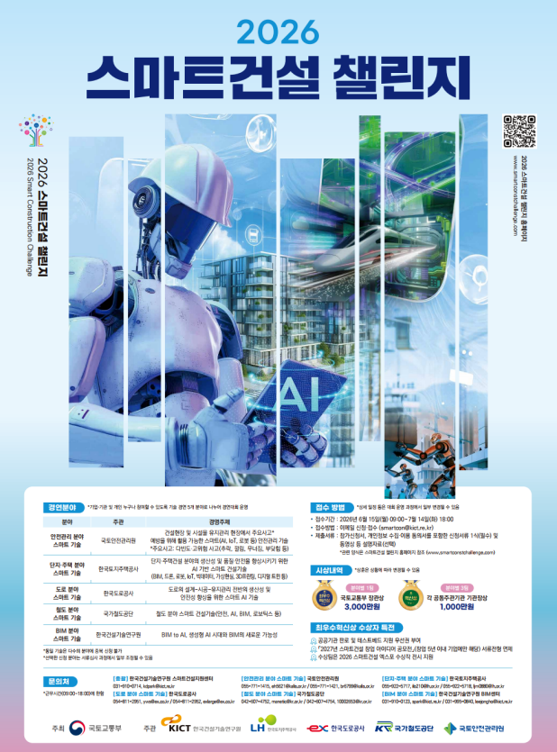
건설 현장의 안전사고 감소와 서비스 품질 향상을 목표로 국토교통부가 개최하는 2026 스마트건설 챌린지는 올해 7회째를 맞이했다. 안전관리, 단지주택, 도로, 철도, BIM 5개 분야에서 기업·기관·개인 누구나 참여 가능하며, 총 3억원 규모의 상금을 제공한다. 특히 BIM 분야는 생성형 AI 시대와 BIM의 새로운 가능성을 주제로 AI 설계 자동화와 품질검증 기술을 중점 추진한다.
핵심 포인트: 핵심 성과: 최우수혁신상 3,000만원을 포함해 총 3억원 규모 상금 지원, 개인 참여 가능으로 저변 확대, 현장실증과 공공기관 판로 지원으로 우수기술의 사업화까지 연계.
기타 (Others)
Anthropic Claude Mythos 5 — 미국 정부 수출 규제 해제
미국 정부가 앤트로픽의 Claude Mythos 5 AI 모델에 부과했던 수출 규제를 해제했다. 이에 따라 100개 이상의 미국 주요 기반시설 운영 기관과 정부 기관이 해당 모델을 이용할 수 있게 되었다. 2주 전 트럼프 행정부가 악용 우려로 내렸던 규제 조치가 철회된 것으로, 앤트로픽은 정부와의 협력을 통해 Mythos 5의 이용 범위를 확대하고 약화된 버전인 Fable 5의 일반 공개도 추진할 계획이다.
핵심 포인트: 핵심 성과: 미국 정부가 Mythos 5 수출 규제를 해제하여 100개 이상의 미국 주요 기관에 모델 접근 허용, Fable 5 공개 협의도 진행 중
🔗 semafor.com/article/06/27/2026/us-release…
기타 (Others)